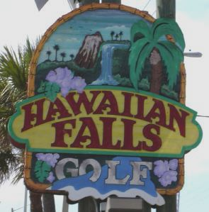
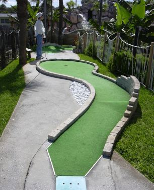

| B:
Hawaiian Falls 2504 S. Atlantic Ave, Daytona
(west side of A1A, south of 92)
(386) 767-7671
 | 
| Price: $12.50 Number of Courses: 2 Upkeep: C Originality: C Hole-in-One Difficulty: Easy/Medium Par Difficulty: Easy/Medium Music: Hawaiian
Hawaiian Falls, which evidently used to be called Kahunna Falls, offers two courses, one easier and one harder. Some holes are interesting, not to mention downright challenging, but several are just twists and turns, and others are just straight shots with nice scenery. |